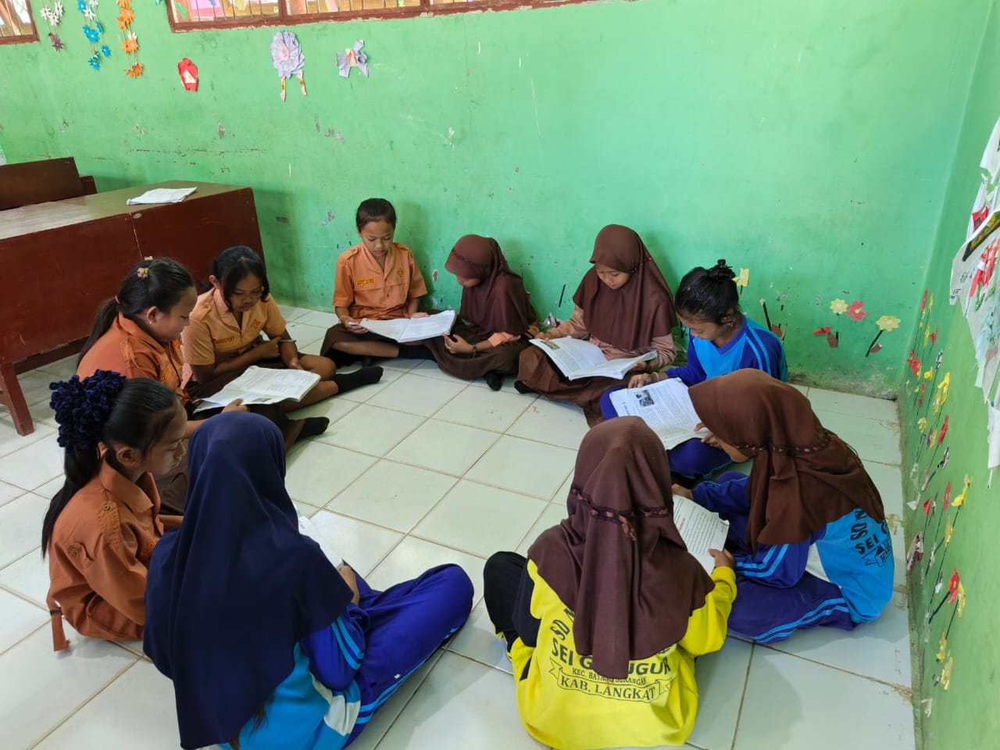
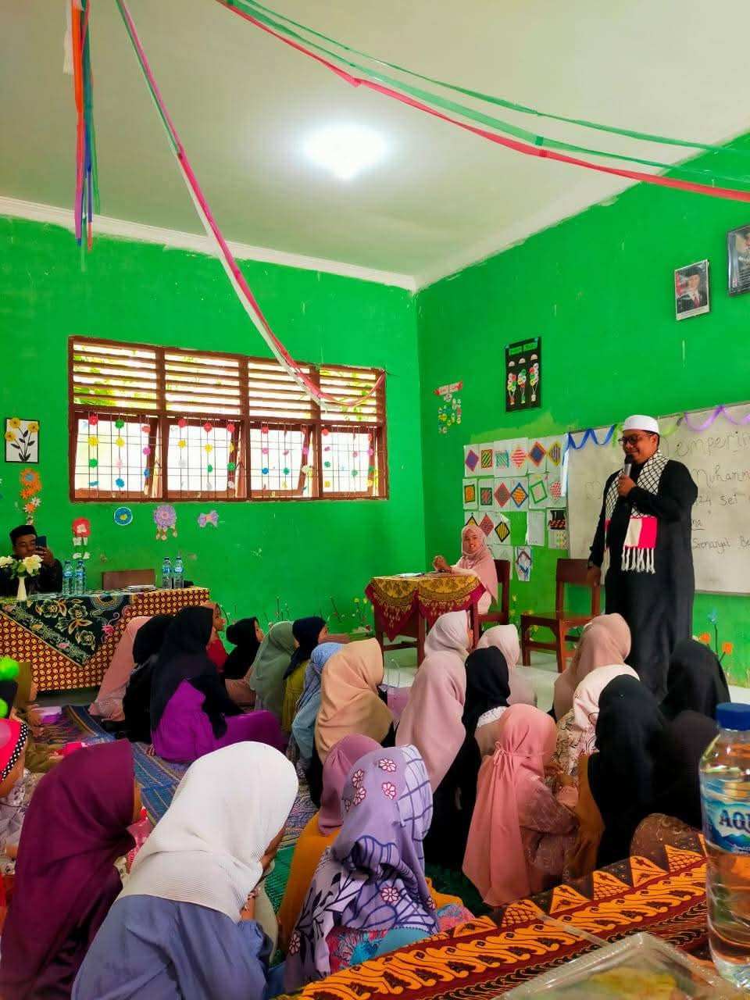
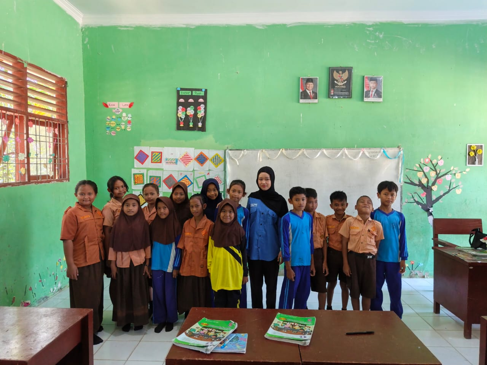

SDN 058424 Sei Gelugur merupakan satuan pendidikan dasar yang memberikan layanan pembelajaran bagi anak usia sekolah dasar di wilayah Sei Gelugur, Kabupaten Langkat.
Sekolah mendukung pembentukan karakter siswa melalui budaya disiplin, sopan santun, kerja sama, kepedulian lingkungan, serta penguatan kemampuan membaca, menulis, dan berhitung.
SD Negeri 058424 Sei Gelugur, terletak di Dusun Sei Gelugur, Desa Sei Musam, Kecamatan Batang Serangan, Kabupaten Langkat, Provinsi Sumatera Utara, merupakan sekolah dasar negeri yang telah berdiri sejak tahun 1996. Dengan luas tanah 2.500 meter persegi, sekolah ini menampung para siswa yang belajar dengan sistem pagi selama enam hari dalam seminggu.
SD Negeri 058424 Sei Gelugur memiliki akreditasi B, dengan nomor SK Akreditasi 740/BAP-SM/LL/XI/2016 yang diterbitkan pada tanggal 01 November 2016. Hal ini menandakan komitmen sekolah dalam memberikan pendidikan berkualitas dan sesuai standar nasional. Sekolah ini juga dilengkapi dengan akses internet dan sumber listrik dari PLN, menunjukkan upaya sekolah dalam menyediakan fasilitas belajar yang memadai bagi para siswa.
Beberapa fokus yang dapat ditampilkan pada website sekolah.
Penguatan kemampuan membaca, menulis, berhitung, dan berpikir logis sesuai tingkat perkembangan siswa.
Pembiasaan sikap disiplin, hormat kepada guru, tanggung jawab, kerja sama, dan kepedulian terhadap teman.
Kegiatan menjaga kebersihan kelas, halaman sekolah, dan pembiasaan hidup bersih di lingkungan belajar.
Kumpulan informasi dan kegiatan terbaru di SDN 058424 Sei Gelugur.

Kegiatan literasi pagi di SDN 058424 Sei Gelugur dilaksanakan secara rutin untuk meningkatkan minat baca dan kemampuan literasi siswa sejak dini.
Baca selengkapnya
SDN 058424 Sei Gelugur memperingati Maulid Nabi Muhammad SAW dengan kegiatan keagamaan yang bertujuan menanamkan nilai keteladanan dan meningkatkan kecintaan siswa kepada Rasulullah.
Baca selengkapnya
SDN 058424 Sei Gelugur menerima kunjungan mahasiswa ITBI dalam rangka observasi akademik untuk mempelajari proses pembelajaran di lingkungan sekolah dasar.
Baca selengkapnyaInformasi jadwal pendaftaran, persyaratan berkas, dan alur penerimaan siswa baru dapat diperoleh langsung melalui pihak sekolah.
Chat WhatsAppHubungi sekolah untuk informasi lebih lanjut.
Alamat: Sei Gelugur, Kabupaten Langkat, Sumatera Utara
Email: sdn058424@gmail.com
Telepon: +62 852-7534-5116 (WhatsApp)
Jam Layanan: 07.30 sampai 13.00 WIB
Lihat lokasi SDN 058424 Sei Gelugur melalui peta berikut.